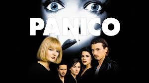
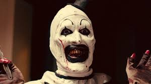
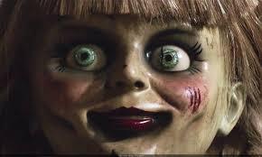
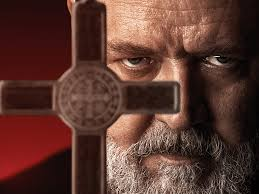
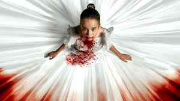
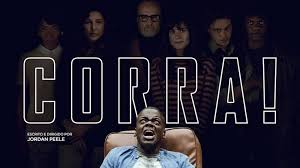
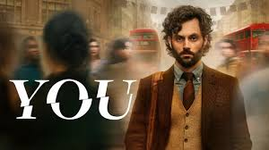

Sinopse: O filme segue Michael Myers, um assassino que, aos seis anos, matou sua irmã mais velha na noite de Halloween. Quinze anos depois, ele escapa de um hospital psiquiátrico e retorna à sua cidade natal, Haddonfield, para continuar sua onda de assassinatos. A jovem Laurie Strode (interpretada por Jamie Lee Curtis) e seus amigos se tornam os novos alvos de Michael, enquanto o Dr. Sam Loomis (interpretado por Donald Pleasence) tenta detê-lo.

Sidney Prescott (Neve Campbell) começa a desconfiar que a morte de dois estudantes está relacionada com o falecimento da sua mãe, há cerca de um ano. Enquanto isso, os jovens da pacata cidadezinha começam a receber ligações de um maníaco que faz perguntas sobre filmes de horror. Quem erra, morre. As perguntas seguem uma lógica que será desvendada numa grande festa escolar.
Em Terrifier, um programa de televisão passa. Nele, um repórter entrevista uma mulher gravemente desfigurada, a única sobrevivente de um massacre ocorrido no Halloween anterior. Brown menciona que o corpo do assassino, conhecido apenas como "Art the Clown", desapareceu do necrotério. Na véspera do Halloween, as garotas Dawn (Catherine Corcoran) e Tara (Jenna Kanell) procuram a melhor festa da cidade. Mas, em vez de passar a noite com álcool e garotos bonitos, eles vivenciam o momento mais cruel de suas vidas. Quando param em uma pequena lanchonete e pedem uma selfie ao palhaço Art (David Howard Thornton), Dawn e Tara não suspeitam de nenhum mal. Mas quando as jovens encontram o homem mascarado assustador novamente naquela mesma noite, o horror começa. Porque Art é um palhaço assassino - e tem suas próximas vítimas em vista...
Oskar, um menino de 12 anos solitário e frequentemente intimidado por seus colegas de escola, vive nos subúrbios de Estocolmo. Sua vida muda quando ele conhece Eli, uma misteriosa garota que se muda para o apartamento ao lado. Conforme os dois se tornam amigos, Oskar descobre que Eli é uma vampira. Enquanto tenta entender e aceitar a verdadeira natureza de Eli, uma série de eventos sinistros começa a ocorrer na vizinhança, forçando-os a confrontar suas próprias realidades e os perigos que os cercam.

Em Anabelle, John (Ward Horton) encontrou o presente perfeito para sua futura esposa, Mia (Annabelle Wallis): uma rara boneca antiga com um lindo vestido. Mia fica bastante contente com seu presente, porém, sua animação com a boneca não duraria muito tempo. Certa noite, sua casa é invadida por membros de uma seita satânica que, buscando completar um ritual, atacam violentamente o casal. Após derramarem sangue, os cultistas são detidos. O que o casal não contava é que, mesmo depois de um tempo, as consequências dessa invasão continuariam a aterrorizar suas vidas, principalmente quando ocorrências sobrenaturais, envolvendo a boneca, passam a permear a vida de Mia.
Inspirado nos arquivos reais do Padre Gabriele Amorth, Chefe Exorcista do Vaticano. O padre realizou mais de 100.000 exorcismos em sua vida e faleceu em 2016 aos 91 anos. Amorth escreveu duas memórias – An Exorcist Tells His Story e An Exorcist: More Stories – e detalhou suas experiências lutando contra Satanás e demônios que agarraram e possuíram as pessoas com seu mal. O filme, sendo o retrato do personagem da vida real, acompanha Amorth (Russell Crowe) enquanto ele investiga a terrível possessão de um menino e acaba descobrindo uma conspiração secular que o Vaticano tentou desesperadamente proteger e manter no esquecimento.
Em Abigail, um peculiar grupo de criminosos aceita mais um típico trabalho. Dessa vez, a proposta é sequestrar uma bailarina de doze anos, que também é filha de um dos mais poderosos homens do submundo. Enquanto o contratante do grupo pede um resgate de 50 milhões de dólares para o pai da garota, o grupo só precisa observar a criança por uma noite em uma mansão isolada. No entanto, quando os raptores começam a desaparecer, um por um, logo descobrem da pior forma que estão trancados dentro de casa com uma garotinha nada normal.
O filme “Corra” está na lista de um dos melhores filmes de terror de todos os tempos com um roteiro de terror psicológico. Chris Washington, um jovem fotógrafo afro-americano, viaja com sua namorada branca, Rose Armitage, para conhecer seus pais em uma casa de campo. No início, Chris percebe o comportamento excessivamente acolhedor dos Armitage como tentativas nervosas de lidar com o relacionamento interracial da filha. No entanto, à medida que o fim de semana avança, uma série de descobertas perturbadoras revela uma verdade aterradora. Chris logo descobre que ele é a mais recente vítima de um plano sinistro envolvendo hipnose e manipulação mental.
A história acompanha Joe, um gerente de livrarias que conhece uma aspirante a escritora e usa a internet e as mídias sociais como ferramentas para reunir as informações pessoais para se aproximar dela e também para fazer a mulher dos seus sonhos se apaixonar por ele. 